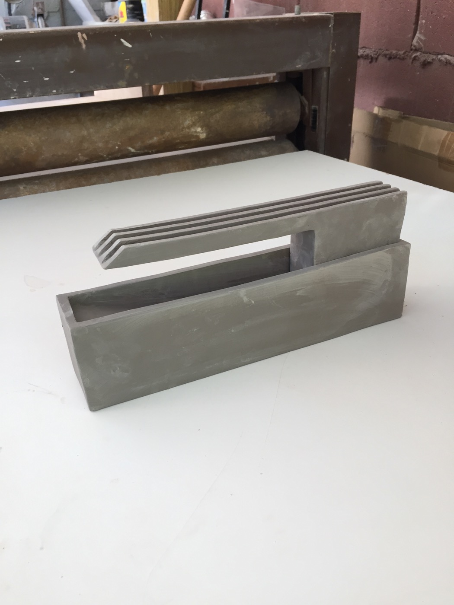

09.18.17
Too much pressure.
09.09.17
Made three alternate cantilever fountains with different collection methods. Also made a pitcher!
09.06.17
Back at it with the cantilever fountains. This test showed some promise but the pressure of the flow was too great and ended up spilling over the sides of the top.
Unfortunately the collection chamber was not large enough to control the water pressure. I'm guessing the cantilever may have also warped in the kiln, preventing gravity to help guide the water. Next versions will account for this and have a slight downwards tilt and an extended collection chamber.
09.05.17
Two lessons learned: construct extra space for drainage to account for shrinkage and the always build a flow diffusion panel or collection chamber. I'd like to spend time with these isolated problems, testing what works best for a laminar effect.
09.05.17
Both iterations are inspired by a bell-mouth spillway. The second version was built with a secondary slab to diffuse the pump's flow but cracked in the kiln.
09.02.17
Basic fountain sketch that I ended up recycling.
09.02.17
The search for a cable gland that was both liquid tight and small enough for a 3mm cable was resolved
here. Still interested in trying out a rubber grommet like this.
09.01.17
One of my favorite pieces to work on, but unfortunately the addition of water was extremely anticlimatic.
09.01.17
Second attempt at the weir fountain. Next time I plan on adding another slab to cover the holes and diffuse the water pressure. Planning on testing with neverwet on the V notch and reading more about weir construction.
08.20.17
Tiered fountain made with four wheel thrown parts. Still unglazed. Requires an excessive amount of water to run properly and work well as a desktop fountain. The scale seems better suited for outdoor use.
07.21.17
First sketch for the bell-mouth spillway. Thrown hollow torus top. Originally I imagined that water would pool in the center and spill over the sides into basin. (update: after testing, it is clear that water should gather in basin and spill into the center of the torus like a traditional bell-mouth spillway.
07.17.17
Late night sketching with bone dry extrusions. The pump access is relatively easy with the removable cantilever.
07.16.17
The first model is based on a v notch weir used in flood control and measurement. The flow of water must pass through notch, simplifying flow volume calculations.
The second fountian is another extrusion test made with one die flipped to create a mirror image.
07.10.17
Testing 9-12V pump with two AA batteries and reed switch.
07.05.17
Cantilever spillway: Second extruded fountain. Less warp, some cracking.

06.45.17
First extruded fountain.
06.22.17
Leaky test with heavy flow and random pieces.
04.21.17
Thrown fountain with tiny holes in bad places.